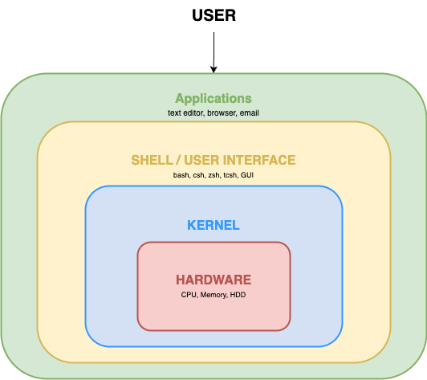
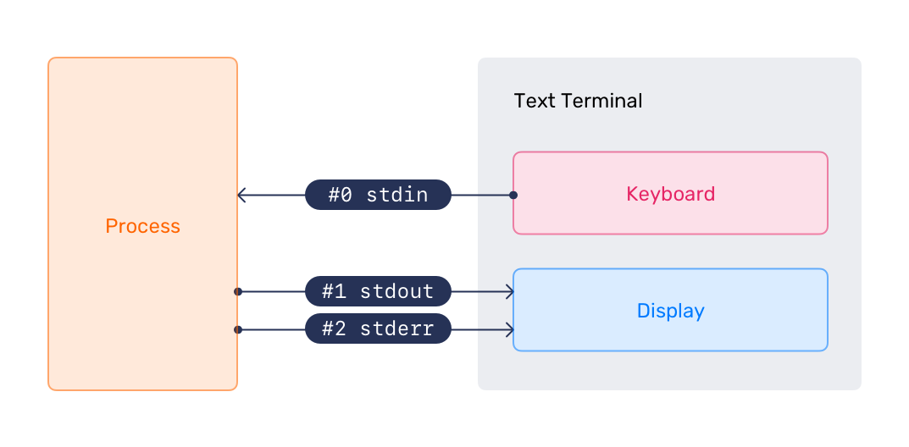

2. CLI Environment¶
Note
This page is structured from the source material and is pending command validation.
Abstract
Define the shell, use CLI commands and help, work with variables and streams, chain commands, and edit files with nano.
The shell is a command-language interpreter for interacting with the operating system. It receives typed commands and sends them to the operating system for execution. Ubuntu Server installs bash and dash by default; bash is the default shell. System scripts declare the shell they use.
bash: Bourne Again Shelldash: Debian Almquist Shell
The user's default shell is defined in /etc/passwd. The distribution-agnostic command-line interface (CLI) provides more control and options than a graphical user interface. A terminal emulator provides access to the shell and normally displays a prompt containing the username, host name, and a dollar sign.

Commands can be executable programs, shell built-ins such as cd, shell functions, or aliases. Terminal text can be copied with the mouse by highlighting it, then using the middle mouse button or the paste option in the terminal.
2.1 Secure Shell¶
Secure Shell (SSH) connects to remote computers and allows interactive program execution. SSH is the common method for secure remote Linux-server access: it encrypts the session and supports authentication, allowing one PC to manage multiple computers.
# Connect when the remote username matches the local username
ssh remote_host
Expected result
Validation pending; no captured output is available.
# Connect with a specified remote username
ssh user@remote_host
Expected result
Validation pending; no captured output is available.
# End the current SSH session
exit
Expected result
Validation pending; no captured output is available.
# Run one command on a remote host
ssh remote_host command_to_run
Expected result
Validation pending; no captured output is available.
2.2 CLI Commands¶
Common CLI commands can also be used in scripts to automate tasks.
Navigating the filesystem: cd changes directory, ls lists files, mkdir creates a directory, pwd prints the working directory, and rmdir removes a directory.
Manipulating the filesystem: chgrp changes group ownership, chmod changes file mode bits, chown changes file owner and group, df reports filesystem space use, and du estimates file space use.
Searching the filesystem: find searches for files matching a pattern, locate finds files by name, and which locates a command.
Searching file contents: file determines file type, grep prints matching lines, and less and more view content.
Manipulating file contents: cp copies, ln creates a symbolic link, mv moves or renames, rm removes, and touch changes timestamps.
Text processing: cat concatenates files, gawk scans and processes patterns, head displays the first part of output, tail displays the last part, and tee writes input to standard output and a file.
2.2.1 CLI Commands Lab¶
- Use
manto identify fourlsoptions.
# Open the ls manual page
man ls
Expected result
Validation pending; no captured output is available.
-a, --all includes entries beginning with ., -h, --human-readable prints readable sizes with -l or -s, -l uses long format, and -t sorts by newest modification time first.
- Create
mydir1, enter it, create and entermydir2, return to its parent, then removemydir2.
# Create mydir1
mkdir mydir1
Expected result
Validation pending; no captured output is available.
# Enter mydir1
cd mydir1
Expected result
Validation pending; no captured output is available.
# Create mydir2
mkdir mydir2
Expected result
Validation pending; no captured output is available.
# Enter mydir2
cd mydir2
Expected result
Validation pending; no captured output is available.
# Return to the parent of mydir2
cd ..
Expected result
Validation pending; no captured output is available.
# Remove the empty mydir2 directory
rmdir mydir2
Expected result
Validation pending; no captured output is available.
- Create
file1, copy it tofile2, return to the parent ofmydir1, createmynewdir, and copymydir1contents into it.
# Create file1
touch file1
Expected result
Validation pending; no captured output is available.
# Copy file1 to file2
cp file1 file2
Expected result
Validation pending; no captured output is available.
# Return to the parent directory
cd ..
Expected result
Validation pending; no captured output is available.
# Create mynewdir
mkdir mynewdir
Expected result
Validation pending; no captured output is available.
# Copy mydir1 contents into mynewdir
cp -a mydir1/* mynewdir
Expected result
Validation pending; no captured output is available.
- Type
ls myand press Tab twice to inspect shell completion choices.
# Begin a listing command for tab completion
ls my
Expected result
Validation pending; no captured output is available.
End of the lab. Do not continue to the next topic.
2.3 Getting Help¶
man is the system manual pager. Its argument identifies a program, utility, or function page. A page can occur in multiple sections; by default, the first matching section in a predefined order is displayed. man man documents sections, display options, exit status, environment variables, and the SEE ALSO section.
Manual-page sections are: 1 executable programs or shell commands; 2 system calls; 3 library calls; 4 special files, usually in /dev; 5 file formats and conventions; 6 games; 7 miscellaneous material; 8 system-administration commands; and 9 non-standard kernel routines.
Use Enter for one line down, Space for one page down, g for the top, G for the bottom, h or H for help, q to quit, or arrow keys to move through a manual page.
2.3.1 Getting Help Lab¶
At the prompt, try man, then man man; scroll through the page, use the listed navigation commands, and press h while viewing a page.
# Run man without a page argument
man
Expected result
Validation pending; no captured output is available.
# Open the man manual page
man man
Expected result
Validation pending; no captured output is available.
# Open the ls manual page
man ls
Expected result
Validation pending; no captured output is available.
Then find the rsync -p option.
# Open the rsync manual page
man rsync
Expected result
Validation pending; no captured output is available.
End of the lab. Do not continue to the next topic.
2.4 Shell Environment Variables¶
A shell environment variable is a named character string that stores information such as numbers, text, filenames, devices, or credentials. PATH tells the shell which directories to search for executable files. Use env or printenv to list defined environment variables. Common variables are SHELL for the default shell, USER for the logged-in user, PWD for the current directory, and HOME for the current user's home directory.
To run a command outside PATH, precede it with a relative or full path.
# Run a command using a relative path
. /mycommand.sh
Expected result
Validation pending; no captured output is available.
# Run a command using its full path
/home/myuser/mycommand.sh
Expected result
Validation pending; no captured output is available.
Naming Variables¶
By convention, variable names are uppercase. They can use letters, numbers, and underscores, but cannot begin with a number.
# Export terminal-type variables
export TERM=ansi TERM=xterm-256color
Expected result
Validation pending; no captured output is available.
Setting and Unsetting Variables¶
Define variables with name=value; they are local until the shell exits. Use unset or an empty value to undefine them. Use export to make a variable available to child processes.
# Set local variables
NAME=Marvin
Expected result
Validation pending; no captured output is available.
# Set a variable containing multiple values
NAMES="Marvin Ford Arthur Trillian"
Expected result
Validation pending; no captured output is available.
# Unset NAME
unset NAME
Expected result
Validation pending; no captured output is available.
# Set NAME to an empty value
NAME=
Expected result
Validation pending; no captured output is available.
# Export NAME to child processes
export NAME=Marvin
Expected result
Validation pending; no captured output is available.
Manipulating Variables¶
# Display NAME
echo $NAME
Expected result
Validation pending; no captured output is available.
# Append a value to NAMES
NAMES="$NAMES Zaphod"
Expected result
Validation pending; no captured output is available.
# Mark NAMES as read-only
readonly NAMES
Expected result
Validation pending; no captured output is available.
Special Variables¶
Special variables can be referenced but not assigned. $? is the exit status of the last command, $$ is the PID of the current shell, and $! is the PID of the last background command.
# Reference the last command's exit status
$?
Expected result
Validation pending; no captured output is available.
# Reference the current shell process ID
$$$
Expected result
Validation pending; no captured output is available.
# Reference the last background command's process ID
$!
Expected result
Validation pending; no captured output is available.
2.4.1 Shell Environment and Variables Lab¶
- View
PATHand environment variables.
# Display the PATH variable
echo $PATH
Expected result
Validation pending; no captured output is available.
# List environment variables
env
Expected result
Validation pending; no captured output is available.
- Consider the purpose of
SHELL. Set and viewMYNAME.
# Set MYNAME
MYNAME="john"
Expected result
Validation pending; no captured output is available.
# Display MYNAME
echo $MYNAME
Expected result
Validation pending; no captured output is available.
- Set
PART1andPART2, then display both.
# Set the first name fragment
PART1="My name is"
Expected result
Validation pending; no captured output is available.
# Set the second name fragment
PART2="john"
Expected result
Validation pending; no captured output is available.
# Display the first fragment
echo $PART1
Expected result
Validation pending; no captured output is available.
# Display the second fragment
echo $PART2
Expected result
Validation pending; no captured output is available.
- Combine the variables into
STUDENTNAMEand display it.
# Combine the name fragments
STUDENTNAME=$PART1$PART2
Expected result
Validation pending; no captured output is available.
# Display STUDENTNAME
echo $STUDENTNAME
Expected result
Validation pending; no captured output is available.
- Undefine the variables, then confirm they are empty.
# Unset PART1
unset PART1
Expected result
Validation pending; no captured output is available.
# Unset PART2
unset PART2
Expected result
Validation pending; no captured output is available.
# Unset STUDENTNAME
unset STUDENTNAME
Expected result
Validation pending; no captured output is available.
# Confirm PART1 is undefined
echo $PART1
Expected result
Validation pending; no captured output is available.
# Confirm PART2 is undefined
echo $PART2
Expected result
Validation pending; no captured output is available.
# Confirm STUDENTNAME is undefined
echo $STUDENTNAME
Expected result
Validation pending; no captured output is available.
- Set an unexported variable, create a subshell, and inspect it.
# Set x in the current shell
x=5
Expected result
Validation pending; no captured output is available.
# Display x in the current shell
echo $x
Expected result
Validation pending; no captured output is available.
# Create a subshell
bash
Expected result
Validation pending; no captured output is available.
# Display x in the subshell
echo $x
Expected result
Validation pending; no captured output is available.
# Exit back to the original shell
exit
Expected result
Validation pending; no captured output is available.
- Export
xand inspect it in a subshell.
# Export x
export x=5
Expected result
Validation pending; no captured output is available.
# Display exported x
echo $x
Expected result
Validation pending; no captured output is available.
# Create a subshell
bash
Expected result
Validation pending; no captured output is available.
# Display x in the subshell
echo $x
Expected result
Validation pending; no captured output is available.
# Exit the subshell
exit
Expected result
Validation pending; no captured output is available.
End of the lab. Do not continue to the next topic.
2.5 Standard Streams¶

In computer programming, standard streams are preconnected input and output communication channels between a computer program and its environment when it begins execution. The three I/O connections are standard input (STDIN), standard output (STDOUT), and standard error (STDERR).
Redirection¶
Commands normally take input from the terminal or STDIN through the keyboard. Commands normally send output back to the terminal or STDOUT through the screen. I/O redirection allows commands to receive input from other files or commands, and to send output to files or other commands.
Output Redirection¶
The output of a command can be sent to a file with > followed by a filename. If the filename does not exist, it is created. If it exists, it is overwritten. Use two greater-than characters (>>) followed by a filename to append command output to an existing file.
# Write a detailed listing to a file
ls -al > ~/all_files.txt
Expected result
Validation pending; no captured output is available.
# Append a /tmp listing to a file
ls -al /tmp >> ~/all_files.txt
Expected result
Validation pending; no captured output is available.
# Combine file contents into one file
cat file1.txt file2.txt file3.txt > combined-file.txt
Expected result
Validation pending; no captured output is available.
# Discard ping output
ping -c 2 www.xxx.yyy.zzz > /dev/null
Expected result
Validation pending; no captured output is available.
Input Redirection¶
A command can receive input from a file with < followed by a filename. When two less-than characters (<<) are used, a delimiter must be defined immediately after <<. The shell reads input until it reaches a line containing that delimiter.
# Count lines from the passwd file
wc -l < /etc/passwd
Expected result
Validation pending; no captured output is available.
# Begin a here-document for wc
wc -l << EOF
Expected result
Validation pending; no captured output is available.
This counts lines one at a time until it reaches the EOF delimiter.
Piped Redirection¶
The output of one command can be sent directly to another command as input with |. This is called a pipe or piping.
# Page through a detailed listing
ls -al | less
Expected result
Validation pending; no captured output is available.
# Filter a detailed listing
ls -al | grep string
Expected result
Validation pending; no captured output is available.
Advanced Redirection¶
The three I/O types have their own identifiers, called file descriptors:
0: Standard Input (STDIN), data fed into the program.1: Standard Output (STDOUT), data printed by the program, which defaults to the terminal.2: Standard Error (STDERR), error messages, which default to the terminal.
These descriptors can redirect a data stream from its normal destination.
# Write normal output and errors to separate files
ls -al /r* > /tmp/list.txt 2>/tmp/errors.txt
Expected result
Validation pending; no captured output is available.
# Write normal output and errors to one file
ls -al /r* > /tmp/list.txt 2>&1
Expected result
Validation pending; no captured output is available.
2.5.1 Redirection Lab¶
# Save a directory listing to mylist
ls > mylist
Expected result
Validation pending; no captured output is available.
# Display the fifth item in /usr/bin listing order
ls /usr/bin | head -5 | tail -1
Expected result
Validation pending; no captured output is available.
# Find list entries in mylist
grep list mylist
Expected result
Validation pending; no captured output is available.
# Display the newest entries in /usr/bin
ls -lt /usr/bin | head
Expected result
Validation pending; no captured output is available.
# Display the largest directory sizes
du | sort -nr | head
Expected result
Validation pending; no captured output is available.
# Create redirection.txt with a here-document
cat >redirection.txt <<EOF
Hello world!
EOF
Expected result
Validation pending; no captured output is available.
# Find examine references in less help
less --help | grep -i examine
Expected result
Validation pending; no captured output is available.
End of the lab. Do not continue to the next topic.
2.6 Command Chaining¶
Command chaining combines commands on one command line. Operators include & for background execution, ; for sequential execution, && for execution after success, || for execution after failure, ! for negation, | for piping, {} for grouping, () for precedence, and \ to continue a command or escape special characters.
# Run three commands sequentially
ls; pwd; whoami
Expected result
Validation pending; no captured output is available.
# Report whether a host can be pinged
ping -c1 google.com && echo "That's good, able to ping google.com" || \
echo "That's bad unable to ping google.com"
Expected result
Validation pending; no captured output is available.
2.7 Return Values and Expansion¶
Successful commands return exit code 0; unsuccessful commands should return a non-zero code. $? stores the last command's exit status. The shell resolves tokens through expansions, including brace, tilde, parameter, command, arithmetic, and wildcard expansion.
Brace Expansion¶
Brace expansion generates strings from comma-separated values or ranges and can be nested.
# Demonstrate brace expansion
echo sp{el,il,al}
Expected result
Validation pending; no captured output is available.
# Create directories using brace ranges
mkdir {2014..2016}-0{0..9} {2014..2016}-{10..12}
Expected result
Validation pending; no captured output is available.
# Create files using brace ranges
touch file-{A..Z}{a..z}-{0..9}
Expected result
Validation pending; no captured output is available.
# Create text files using brace ranges
touch {A..Z}{a..z}-{0..9}.txt
Expected result
Validation pending; no captured output is available.
# Remove files with selected extensions
rm filename.{pl,sh,py,c}
Expected result
Validation pending; no captured output is available.
Tilde Expansion¶
Tilde expansion can resolve home directories, the current working directory, and the previous working directory. It occurs only at the beginning of a word or as a separate word.
# Change to the current user's home directory
cd ~
Expected result
Validation pending; no captured output is available.
# Change to ubuntu's home directory
cd ~ubuntu
Expected result
Validation pending; no captured output is available.
# Create hello.txt in the current user's home directory
echo hello >~/hello.txt
Expected result
Validation pending; no captured output is available.
Shell Parameter and Variable Expansion¶
$ introduces parameter expansion, command substitution, or arithmetic expansion. Braces protect a variable name from adjacent characters. ${!name} performs indirect expansion, and a default can be assigned while expanding an unset variable.
# Display the configured shell
echo $SHELL
Expected result
Validation pending; no captured output is available.
# Store the current date in D
D=`date`
Expected result
Validation pending; no captured output is available.
# Display D
echo $D
Expected result
Validation pending; no captured output is available.
# Compare braced and unbraced variable expansion
echo ${D}d vs echo $Dd
Expected result
Validation pending; no captured output is available.
# Compare indirect-style variable-name patterns
echo ${!LC*} vs echo $LC*
Expected result
Validation pending; no captured output is available.
# Set TODAY during expansion when it is unset
echo ${TODAY:=`date+%A`}
Expected result
Validation pending; no captured output is available.
Command Substitution¶
Command substitution replaces a command with its standard output. The forms are $(command) and backticks; trailing newlines are removed.
# Display the date using command substitution
echo "The date and time is: $(date)"
Expected result
Validation pending; no captured output is available.
# Display the date using backticks
echo "The date and time is `date`"
Expected result
Validation pending; no captured output is available.
# Display locale environment assignments
echo $(env | grep ^LC_)
Expected result
Validation pending; no captured output is available.
# Display locale assignments one per line
printf "%s\n" $(env | grep ^LC_)
Expected result
Validation pending; no captured output is available.
Arithmetic Expansion¶
Arithmetic expansion evaluates an arithmetic expression and substitutes the result. It works with integers. All tokens in the expression undergo parameter expansion, command substitution, and quote removal. Variables within arithmetic expansion can, in some cases, be used with or without $.
| Operator | Meaning |
|---|---|
+ |
Addition |
- |
Subtraction |
++ |
Increment by 1 |
-- |
Decrement by 1 |
+= |
Addition assignment |
-= |
Subtraction assignment |
* |
Multiplication |
/ |
Division |
*= |
Multiplication assignment |
/= |
Division assignment |
%= |
Remainder assignment |
% |
Remainder |
!= |
Inequality evaluation |
== |
Equality evaluation |
> |
Greater-than comparison |
< |
Less-than comparison |
>= |
Greater-than or equal comparison |
<= |
Less-than or equal comparison |
, |
Expression separator |
** |
Exponentiation |
Wildcard Expansion¶
The shell provides special characters to specify groups of filenames. These characters are called wildcards. Wildcards select filenames or directories based on character patterns and can be used with any command that accepts filename arguments.
| Wildcard | Meaning |
|---|---|
* |
Matches any one or more characters |
? |
Matches any single character |
[...] |
Matches any one of the enclosed characters |
[[:alnum:]] |
Matches any alphanumeric character |
[[:alpha:]] |
Matches any alphabetic character |
[[:digit:]] |
Matches any numeric character |
[[:upper:]] |
Matches any uppercase alpha character |
[[:lower:]] |
Matches any lowercase alpha character |
[![:alnum:]] |
Matches any non-alphanumeric character |
[![:alpha:]] |
Matches any non-alphabetic character |
[![:digit:]] |
Matches any non-numeric character |
[![:upper:]] |
Matches any non-uppercase alpha character |
[![:lower:]] |
Matches any non-lowercase alpha character |
# List metadata for all entries
ls -ld *
Expected result
Validation pending; no captured output is available.
# List metadata for log files
ls -ld *.log
Expected result
Validation pending; no captured output is available.
# List metadata for names starting with a, b, or c
ls -ld [abc]*
Expected result
Validation pending; no captured output is available.
# List names with a two-character suffix
ls -ld *.??
Expected result
Validation pending; no captured output is available.
# List log names ending with a digit extension
ls -ld *.log.[[:digit:]]
Expected result
Validation pending; no captured output is available.
# List names with digit and two-character extensions
ls -ld *.[[:digit:]].??
Expected result
Validation pending; no captured output is available.
# List names ending in a non-alphanumeric character
ls -ld *[![:alnum:]]
Expected result
Validation pending; no captured output is available.
2.7.1 Chaining and Expansion Lab¶
Try these chaining examples. /temp may not exist; the fallback examples demonstrate ||.
# Change to /temp, then list it
cd /temp; ls -al
Expected result
Validation pending; no captured output is available.
# List /temp only after changing to it
cd /temp && ls -al
Expected result
Validation pending; no captured output is available.
# Report a failed directory change
cd /temp || echo "Could not change to /temp"
Expected result
Validation pending; no captured output is available.
# List /temp or report failure
cd /temp && ls -al || echo "Could not change to /temp"
Expected result
Validation pending; no captured output is available.
# Return home after a failed directory change
cd /temp && ls -al || { echo "Could not change to /temp. Going home instead"; cd ~; pwd; }
Expected result
Validation pending; no captured output is available.
# List /temp or count entries in /tmp
(cd /temp && ls -al) || (cd /tmp && { ls -al | wc -l; })
Expected result
Validation pending; no captured output is available.
# List uncompressed files in /var/log using extglob
ls -ld /var/log/!(*.gz)
Expected result
Validation pending; no captured output is available.
# List the last ten entries in /etc sort order
ls -ltr /etc | tail
Expected result
Validation pending; no captured output is available.
# Find ls commands in shell history
history | grep ls
Expected result
Validation pending; no captured output is available.
# Set a filename variable
file=data.txt
Expected result
Validation pending; no captured output is available.
# Remove the shortest suffix beginning with a period
echo ${file%.*}
Expected result
Validation pending; no captured output is available.
# Remove the shortest prefix ending with a period
echo ${file#*.}
Expected result
Validation pending; no captured output is available.
# Set X for arithmetic examples
X=5
Expected result
Validation pending; no captured output is available.
# Add one to X
echo $((X+1))
Expected result
Validation pending; no captured output is available.
# Add one to X with an explicit variable expansion
echo $(($X+1))
Expected result
Validation pending; no captured output is available.
# Compare X with 15
echo $((X>15))
Expected result
Validation pending; no captured output is available.
# Change to the command-binary directory
cd /usr/bin
Expected result
Validation pending; no captured output is available.
# List entries beginning with m
ls m*
Expected result
Validation pending; no captured output is available.
# List entries ending with a three-character extension
ls *.???
Expected result
Validation pending; no captured output is available.
# Return to the home directory
cd ~
Expected result
Validation pending; no captured output is available.
End of the lab. Do not continue to the next topic.
2.8 Introduction to nano¶
nano is a small, easy-to-learn text editor with interactive search and replace, go-to line and column, auto-indentation, feature toggles, internationalization, and filename tab completion. It is installed by default in Ubuntu and works with sudo.
# Start nano for a new file
nano
Expected result
Validation pending; no captured output is available.
# Edit an existing file with nano
nano /path/filename
Expected result
Validation pending; no captured output is available.
Nano displays commands in its editor window. Press Ctrl+g for additional commands.
2.8.1 nano Lab¶
Create and edit files with nano, reviewing the commands available in the editor.
# Change to the home directory
cd ~
Expected result
Validation pending; no captured output is available.
# Create and edit fileone.txt
nano fileone.txt
Expected result
Validation pending; no captured output is available.
Type The quick brown fox jumped over the lazy dog.. Copy and paste it ten times using the nano shortcuts:
Ctrl+K
Ctrl+U
Practice moving through the file, then save and close it:
Ctrl+X
Create shells.txt:
# Create and edit shells.txt
nano shells.txt
Expected result
Validation pending; no captured output is available.
Add She sells seashells down by the seashore., copy and paste the line three times, then save and close the file. Open the original file, indent the first three lines, and replace fox with rabbit:
Ctrl+\\
Move forward one word:
Ctrl+Space
Delete a line:
Ctrl+K
Save and exit:
Ctrl+X
End of the lab. Do not continue to the next topic.